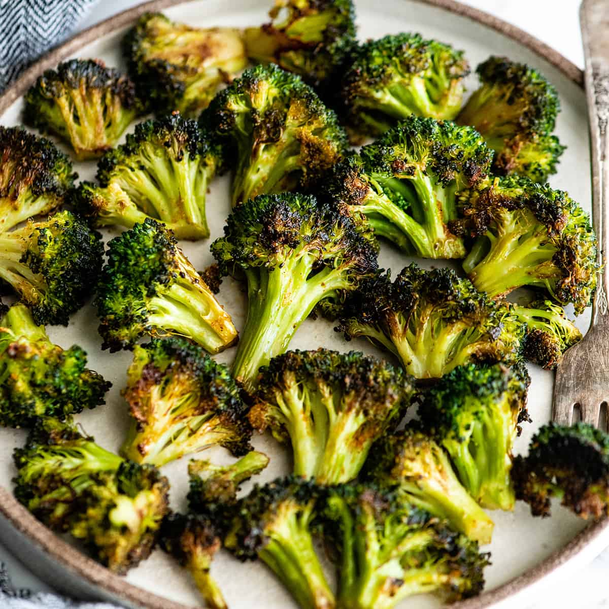

Roasted Broccoli

Description
This is a simple, tasty side dish that goes great with a pan cooked steak.
Much like that steak recipe, the ingredients are few and simple, but come together for a fresh dish that you're sure to enjoy
Ingredients
- Broccoli Florets
- Olive Oil
- Garlic Powder
- Paprika
- Salt and Pepper
Steps
- Mix the garlic, paprika, salt, and pepper to taste
- combine the broccoli and the olive oil, ensuring all the florets have a light, even coating
- Add the spice mixture to the broccoli and stir well, making sure again the coating is even
- Cook at 450 degrees for 15 minutes, stir halfway through.